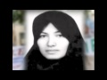

|
|
|
Browsing
Contact Us |
Campaigners |
Face to Face |
Tribune |
Interview |
News |
On the Web |
One Million |
Report
Farsi | Français | German | Italian | Spanish | العربية Also in this section
|
 Iran: Prevent Woman’s Execution for AdulteryJudiciary Should End Stoning as a Punishment and Halt All Executions Wednesday 7 July 2010 View online : Human Rights Watch The Iranian judiciary should halt plans to execute a woman convicted of adultery, Human Rights Watch said today. Sakineh Mohammadi Ashtiani, a 43 year-old mother of two who was previously punished with flogging for having an “illicit relationship,” faces imminent death by stoning after a second court convicted her of adultery during marriage. On May 15, 2006, a criminal court in East Azerbaijan province found Ashtiani guilty of having an “illicit relationship” with two men following the death of her husband. She was sentenced to flogging and was given 99 lashes. In September 2006, during the murder trial of a man accused of killing Ashtiani’s husband, another court reopened an adultery case based on events that allegedly took place before her husband died and eventually convicted her of “adultery while being married.” During the trial, Ashtiani retracted a confession she had made during a pretrial interrogation, alleging that she had been forced to make the confession under duress. She has continued to deny the adultery charge. “Death by stoning is always cruel and inhuman, and it is especially abhorrent in cases where judges rely on their own hunches instead of evidence to proclaim a defendant guilty,” said Nadya Khalife, Middle East women’s rights researcher at Human Rights Watch. “Iran should immediately put a stop to this execution – and all executions.” Under Iran’s penal code, adultery is a “crime against God” for both men and women. It is punishable by 100 lashes for unmarried men and women, but married offenders are sentenced to death by stoning. Cases of adultery must be proven either by a repeated confession by the defendant or by the testimony of witnesses – four men or three men and two women. However, Iran’s penal code also allows judges in hodud (morality) crimes such as adultery to use their own “knowledge” to determine whether an accused is guilty in the absence of direct evidence. Ashtiani’s lawyer, Mohammad Mostafaei, said in a recent posting on his blog, Modafe’, that two of the five judges found Ashtiani not guilty during the second trial. The three remaining judges found her guilty of adultery on the basis of their own “knowledge.” Ashtiani was convicted by a majority of votes. The Supreme Court confirmed Ashtiani’s death sentence on May 27, 2007. She has exhausted the legal appeals process and the judiciary has denied her repeated requests for clemency. Mostafaei issued a statement on his blog several days ago indicating that he fears his client could be executed at any moment. She is being held in Tabriz prison. |